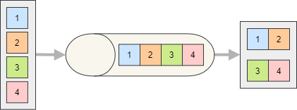

Batch Processing Consumed Messages
Process multiple consumed messages in a single batch to reduce per-message overhead (DB commits, network IO, etc.). Use batching when throughput matters and a small additional latency is acceptable.
{kind=link}

Consumer Configuration
Enable batch processing by calling EnableBatchProcessing on the consumer endpoint.
services.AddSilverback()
.WithConnectionToMessageBroker(options => options.AddKafka())
.AddKafkaClients(clients => clients
.WithBootstrapServers("PLAINTEXT://localhost:9092")
.AddConsumer("consumer1", producer => producer
.Consume<MyMessage>("endpoint1", endpoint => endpoint
.ConsumeFrom("my-topic")
.EnableBatchProcessing(1000, TimeSpan.FromSeconds(30))));
Subscribing to Batches
Your subscriber can consume a batch of messages as an IAsyncEnumerable<T> (or IEnumerable<T> / IMessageStreamEnumerable<T>) of either the message type or the IInboundEnvelope<TMessage>.
public async Task HandleAsync(IAsyncEnumerable<MyMessage> messages)
{
await foreach (MyMessage msg in messages)
{
// process each message
}
// commit once for the whole batch
await _db.SaveChangesAsync();
}
public async Task HandleAsync(IAsyncEnumerable<IInboundEnvelope<MyMessage>> envelopes)
{
await foreach (IInboundEnvelope<MyMessage> envelope in envelopes)
{
if (envelope.IsTombstone)
// delete the related entity
else
// create or update the entity
}
// commit once for the whole batch
await _db.SaveChangesAsync();
}
Important
All messages in the batch are acknowledged/committed once the subscriber successfully completes. If the subscriber throws, the configured error policy applies to the whole batch.
Note
With Kafka, a batch per topic partition is created by default. You can decide to process all partitions together by calling ProcessAllPartitionsTogether on the endpoint configuration and that will create a single batch for the whole topic.